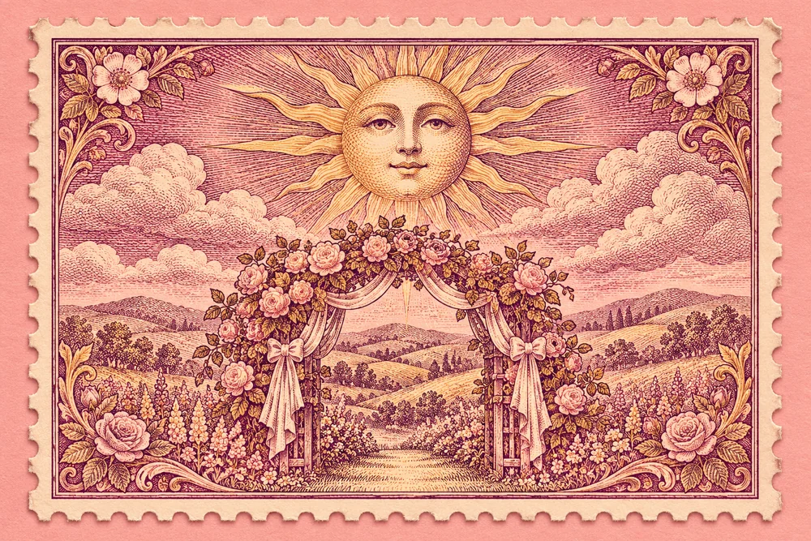

Wedding Day Sunshine
$12 USD
Maybe all you want is twenty dry minutes in the garden. Maybe it’s cool air for the walk to dinner, or a clear evening for photographs. Send us the wedding date, the place, and the weather you’d ask for. We’ll write the couple a blessing they can open that morning.
Inside your letter
We’ll take one detail you share, like a flower from the garden where they’re marrying, and weave it through the letter. The couple gets a simple ritual to try before the guests arrive and a closing wish they can slip beside their vows. The complete letter comes by email, with a printable PDF and an illustrated wish card.
- Full-length personal letter & printable PDF
- Illustrated wish card for your phone
- Digital delivery within 48 hours
Every request for good weather has a size. Your dad measured yours in footsteps. There are twelve from the kitchen door to the lemon tree if you’re Maya, eleven if you’re Jules, and considerably more if you’re Otis and stop twice to sniff.
Example reviews
Illustrative examples for this page design. These comments and ratings are fictional, not customer feedback.
A quiet moment before the ceremony
We read the letter together before everyone arrived. The detail about the garden made it feel connected to our day.
Something to tuck beside our vows
The closing wish was my favourite part. We printed it and kept it with the ceremony notes.
A thoughtful gift for my sister
I wanted a small wedding-morning gift. A letter about their outdoor ceremony felt much more personal than another card.
Beautiful on paper
The illustrated wish card printed clearly, and the warm colours looked lovely beside the flowers.
Lovely, with a little trimming
The letter was tender and specific. We chose a shorter passage to read aloud because the morning was busy.